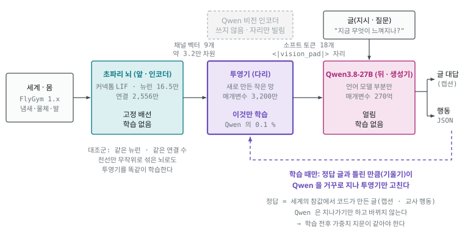

11. 구현 — 초파리 신경 신호를 Qwen 에 직접 넣기
2026-09-22. 01~10 이 조사와 설계였다면 이 문서는 실제로 만들어 돌리고 있는 것의 설명이다. 기계학습을 모르는 사람이 읽고 "무엇이 무엇을 배우는지"를 알 수 있게 썼다. 모르는 말은 끝의 용어 풀이에 있다. 코드: 이 저장소
moai-echomind-fly-connectome· 요구사항 R-3340(docs/requirements/…3340…_req.md) · 인수인계docs/requirements/echomind-fly-connectome-handoff.md. 하는 순서는 학습 안내서. 1판(train-v6)의 되는 것 · 안 되는 것 · 쓸 수 있는 말은 1판 정리(2026-10-07). 2026-09-23 의 다음 판(자료 v2 · 압축 관문 · 작은 투영기)은 이 문서 8.6 과 12.
1. 한 줄로
초파리 뇌가 만든 신경 신호를 Qwen 의 입력 자리에 직접 넣어서, Qwen 이 "초파리가 지금 무엇을 느끼는지" 말하고 초파리 몸을 움직이게 한다.
요구자의 그림 그대로다.
| 앞(인코더) | 뒤(생성기) | 나오는 것 | |
|---|---|---|---|
| 흔한 이미지 생성 모델 | 글 → LLM 텍스트 인코더 → 임베딩 | 디퓨전 모델 | 그림 |
| 이 프로젝트 | 세계 → 초파리 뇌 → 신경 신호 | Qwen(LLM) | 글 · 행동 |
이미지 생성은 글이 앞에서 그림 생성을 "조건 짓는다". 여기서는 초파리 뇌 활동이 앞에서 LLM 의 생성을 조건 짓는다.
2. 세 부품 — 무엇이 학습하고 무엇이 안 하나

| 부품 | 무엇 | 학습하나? |
|---|---|---|
| 초파리 뇌 | 수컷 초파리 커넥톰(MaleCNS) 16.5만 뉴런 · 2,556만 연결을 Shiu 2024 방정식으로 돌린 것 | 안 한다. 배선은 진화와 발달이 만든 그대로 고정 |
| 투영기(projector) | 초파리 신호 → Qwen 입력으로 바꾸는 새로 만든 작은 번역기 | 이것만 학습한다(매개변수 약 3,200만 · Qwen 의 0.1 %) |
| Qwen3.8-27B | 받아 둔 언어 모델(oMLX 폴더의 가중치를 우리 프로그램이 직접 읽음) | 안 한다. 얼려 둔다 |
파인튜닝이 아니다
| 파인튜닝(LoRA 등) | 이번 학습 | |
|---|---|---|
| Qwen 가중치 | 바뀐다 | 그대로 — 학습 전후 가중치 지문을 찍어 같은지 확인한다 |
| 학습되는 곳 | Qwen 안(또는 덧붙인 층) | Qwen 바깥의 투영기 |
| 떼어 내면 | — | Qwen 은 받아 둔 그대로. oMLX · Ollama 에서 쓰던 모델도 영향 없음 |
비전 쪽 학습도 아니다
Qwen3.8 은 원래 이미지를 읽을 수 있다: 이미지 → 비전 인코더 → 합치개 → <|vision_pad|> 자리 → 언어 모델.
우리는 이 길에서 비전 인코더와 합치개를 빼고(아예 올리지 않는다) 같은 자리에
초파리 신경 신호 → 투영기 → <|vision_pad|> 자리를 넣는다. "이미지 자리에 초파리 신호"다.
이미지 읽는 LLM(LLaVA)이 처음 배울 때 이미지 인코더와 LLM 은 얼리고 가운데 투영기만 가르치는데, 그것과 같은 구조다.
3. 투영기는 무엇을 배우나
Qwen 은 초파리 뉴런의 발화를 한 번도 본 적이 없다. 번역기가 없으면 신호를 넣어도 뜻이 없다 — 학습 전에 넣어 보니 "어둠 속에서 희미한 진동과 함께, 아무것도 없는 공허함 속에…" 같은 말을 지어냈다.
투영기는 "이런 뇌 활동이면 이런 상황" 이라는 대응을 배운다. 방법은 단순하다.
- 초파리 뇌 신호를 투영기에 넣고, 나온 것을 Qwen 입력 자리에 끼운다.
- Qwen 이 쓴 글을 정답 글과 비교한다.
- 틀린 만큼(기울기)을 Qwen 을 거꾸로 지나 투영기까지 보내서 투영기만 조금 고친다. Qwen 은 지나가기만 한다.
- 수백 개 예시로 되풀이한다.
정답 글은 사람이 쓰지 않는다. 몸 시뮬레이터가 아는 세계의 참값(물체가 어디 있나 · 냄새 원이 어느 쪽인가)에서 코드가 만든다.
| 단계 | 질문(글) | 정답 예 |
|---|---|---|
| ① 정렬(캡션) | "지금 무엇이 느껴지나?" | 다가오는 물체: 왼쪽 · 중간 · 다가옴 / 먹이 냄새: 오른쪽 · 강함 / 다리 접촉: 6개 / 소리: 없음 / 암컷 대용 물체: 없음 |
| ② 행동 | "지금 어떻게 움직일까?" | {"walk":1.0,"turn":"right","turn_strength":1.0,"stop":false,"groom":false} |
행동 정답은 교사 규칙이 낸다 — 다가오는 물체가 위협(각 크기 20° 이상)이면 반대로 달리고, 아니면 냄새 쪽으로 가고, 먹이에 닿으면 멈춘다. ②단계에서는 캡션 예시를 30 % 섞는다. 같은 투영기로 글 질문에는 글로, 행동 지시에는 JSON 으로 답하게 하려는 것이다(요구자: "일반 텍스트도 들어가서 · 초파리 신호도 들어가게").
4. 무엇을 넣나 — 채널 9개
요구자: "초파리의 다양한 신호 데이터를 벡터화해서 LLM" · "성적인 전기신호 데이터까지도 · 시신경 · 촉각".
| 채널 | 뉴런(주석으로 고름) | 뉴런 수 |
|---|---|---|
| 시각 | 시각 투사 뉴런(시신경 → 중심뇌) | 6,675 |
| 촉각 | 다리 털 · 관절 · 날개 · 몸 기계감각 | 3,868 |
| 청각 | 존스턴 기관 청각 | 115 |
| 후각 | 후각 투사 뉴런 | 686 |
| 미각 | 미각 · 접촉 페로몬 | 1,428 |
| 구애 · 성 회로 | fru/dsx 발현 추정 · 암수 차이 뉴런 | 5,495 |
| 가치 | 버섯체 출력(좋다/나쁘다) | 97 |
| 몸 상태 | 상행 뉴런(신경삭 → 뇌) | 1,846 |
| 운동 | 하강 뉴런(뇌 → 신경삭) | 1,310 |
공간(2026-09-23 channels-v2 · 열째) |
중심복합체 나침반(EPG · PEN · PEG · Δ7) · 이동 벡터(PFN · hΔB) · 목표/조향(FC2 · PFL3) · 회전(HS · VS) — 단위는 구획을 지키는 인스턴스 | 656 |
후각 국소 뉴런 smell_ln(2026-09-26 channels-v3 · 열한째) |
안테나엽 국소 뉴런 4 종(v2LN3A1_b · lLN2X02 · lLN15 · lLN2F_b) — 그래프 선형 전파에서 같은 쪽 편향 0.40~0.48(투사 뉴런 0.08~0.15) · 약한 좌우 차를 투사 뉴런보다 잘 가른다(8.8 · 14) |
26 |
채널 벡터의 크기: v1 9 채널 31,950 차원 · v2 10 채널 33,402 차원 · v3 11 채널 33,450 차원(smell_ln 8 단위 · 48)(단위 수 × 구간 3 × 값 2). 표는 학습 안내서 04장 5.1.
"전기 신호" = 발화 + 문턱 아래 막전위. 300 ms 창을 100 ms 세 구간으로 나눠 뉴런 종류마다 ① 발화율 ② 평균 탈분극을 잰다. 이 모델은 쉬는 상태가 침묵이라 발화가 드물다. 청각 → 거대섬유처럼 문턱 아래에만 정보가 있는 경로가 있어서 막전위도 넣는다.
⚠️ 우리가 직접 자극하는 뉴런은 뺐다. 감각 입구(다가옴 → LC/LPLC · 냄새 → ORN · 다리 접촉)와 명령용 하강 뉴런(DNp09 · DNa02)은 우리가 켜는 뉴런이다. 이것까지 넣으면 Qwen 이 초파리 뇌가 아니라 우리 입력을 되읽게 된다. 그래서 벡터에는 회로를 거쳐 생긴 활동만 남겼다.
5. 결정 하나가 흐르는 길 (300 ms)
- 몸(FlyGym 1.x · 별도 프로세스)이 지금 냄새 농도 · 다가오는 물체 · 다리 접촉을 알려 준다.
- 감각 인코더가 이를 감각 뉴런 발화율로 바꾼다 — 다가옴 → LC/LPLC 13종 · 식초 냄새 → ORN_DM1 · VA2 · 다리 접촉 → 그 다리의 촉각 뉴런.
- 초파리 뇌가 100 ms 돈다. 하강 뉴런이 낸 발화로 몸의 좌우 걸음 세기를 정하고, 몸이 100 ms 걷는다. 이것을 세 번 되풀이한다. 거대섬유(DNp01)가 발화하면 그 구간은 멈춘다(반사 우선 — FlyGym 은 도약을 못 한다).
- 300 ms 동안의 채널 벡터 9개 → 투영기 → Qwen 이 다음 행동 JSON 을 낸다.
- 행동이 하강 뉴런 목표 발화율이 된다 — 걷기 = DNp09 · 왼쪽 회전 = 왼쪽 DNa02 · 오른쪽 회전 = 오른쪽 DNa02.
비실시간이다. Qwen 이 생각하는 동안 세계는 멈춰 기다린다.
6. "초파리 덕"인지 어떻게 가르나 — 대조군
같은 부품, 같은 뉴런 수, 같은 연결 수에 전선만 무작위로 섞은 뇌(섞은 배선)를 하나 더 둔다. 이 뇌의 신호로도 투영기를 똑같이 학습한다. 진짜 배선일 때만 잘 읽히고 잘 움직이면, 그 정보는 초파리 배선 덕이다.
성적표는 다섯 구성을 같은 씨앗(학습에 안 쓴 것) 10개로 돌린다.
| 구성 | 앞 | 뒤 | 가르는 것 |
|---|---|---|---|
| vector(본 설계) | 진짜 배선 → 벡터 → 투영기 | Qwen | — |
| text | 진짜 배선 → 글 요약 | Qwen | 벡터가 글보다 나은가 |
| no_circuit | 세계의 원시 숫자 | Qwen | 초파리 뇌를 거치는 것이 도움이 되나 |
| rewired | 섞은 배선 → 벡터 → 투영기(똑같이 학습) | Qwen | 초파리 배선 덕인가 |
| no_llm | 진짜 배선 → 하강 뉴런 그대로 | 없음 | Qwen 이 더한 것이 있나 |
rewired 를 이기지 못하면 결과 보고에 "초파리 뇌"라는 말을 쓰지 않는다(코드가 문구를 정한다).
(2026-09-23 부터) 섞은 뇌는 하나가 아니라 여럿이다 — 하나와 비교하면 우연히 약한/강한 것을 골랐을 수 있어서, 자료 v2 는 씨앗이 다른 섞은 뇌 다섯에 같은 입력을 넣고,
투영기도 최소 셋을 똑같이 학습한다. "이겼다"는 섞은 뇌 전부보다 높고, 에피소드 단위로 부호를 뒤집어 본 우연 확률이 5 % 미만일 때만이다(규칙 stats-v2 · scorecard-v2 — 학습 안내서 09장).
7. 지금까지 확인한 것 (실측)
| 무엇 | 결과 |
|---|---|
| 시뮬레이터가 Shiu 원래 구현과 같은가 | Brian2 판과 발화 한 개까지 같다 |
| 알려진 반사(다가옴 → 거대섬유) | 반응 확률 0.65 · 1.38 회 · 33.8 ms — 생리 기준 통과 · 섞은 배선은 0 |
| 광수용체로 빛을 넣으면 | 아무 데도 안 퍼진다(발화 0) → 시각 입구를 LC/LPLC 로 옮겼다 |
| Qwen 가중치를 직접 읽나 | 8 초 · 28.6 GB · 토큰 대신 같은 임베딩을 넣으면 결과가 완전히 같다 → 신호를 끼울 수 있다 |
| Qwen 이 도구로 실험을 설계하나 | 7 턴 · 실험 3 번 · 인용한 실행 기록 전부 실재(해석에는 틀린 곳이 있었다) |
| 초파리 배선이 냄새 신호를 퍼뜨리나 | 진짜 배선: 후각 투사 뉴런 합 3.2~3.8만 Hz · 구애/성 0.9~1.1만 · 몸 · 운동까지 / 섞은 배선: 거의 0 |
| 닫힌 고리가 도나 | 교사 규칙으로 먹이까지 2.7~3.0 초 만에 도착(시험 에피소드 4/4) |
8. 지금 돌고 있는 것과 시간
| 순서 | 무엇 | 시간(추정) | 메모리 |
|---|---|---|---|
| 1 | ✅ 학습 자료 모으기 — 교사가 몸을 몰고 진짜·섞은 배선 뇌 둘에 같은 입력. 학습용 581 개(씨앗 0~59 · 교사 60/60 도착 · 다가오는 물체 39 번 중 부딪힘 1) · 평가용 105 개(씨앗 1000~1011 · 학습에 안 씀) | 25 분(일꾼 3) | 가벼움 |
| 2 | 투영기 학습 — 진짜 배선 · 섞은 배선 각각(① 캡션 2 바퀴 ② 행동 + 캡션 섞기 1 바퀴) | 한쪽 약 9 시간 | 최대 약 32 GB(고친 뒤) |
| 3 | 캡션 평가 — 학습에 안 쓴 씨앗으로 칸별 정확도(최빈값 기준선과 나란히) | 약 30 분 | 29 GB |
| 4 | 성적표 — 다섯 구성 × 10 씨앗 | 약 2~3 시간 | 29 GB |
▶ 2~4 는 2026-09-22 07:05 에 시작했다가 20:0x 에 멈췄다(요구자 "지금 멈춤"). 진짜 배선 쪽 캡션 단계는 끝나 저장됐다 (검증 캡션 손실 3.36 → 0.11 — 낮을수록 정답 글에 가깝다). 행동 단계 도중이었고 섞은 배선 · 평가 · 성적표는 아직이다. 22:07 에 다시 시작했다(요구자 "학습 다시 돌려"). 진짜 배선은 저장된 캡션 단계에서 이어 행동 단계만 돌고, 섞은 배선은 처음부터 돈다. 끝나면 결과를 이 문서의 새 장으로 덧붙인다.
이어 가느라 바꾼 것 하나 — 학습 속도를 조절하는 부품(옵티마이저)의 기억은 저장본에 없다. 그래서 두 뇌 모두 행동 단계를 새 옵티마이저로 시작하게 맞췄다(규칙 판
train-v2). 대조군은 절차가 똑같아야 하기 때문이다. 대가: 행동 단계 첫 100 걸음의 손실이 이전 방식보다 높게 시작한다(0.63 → 0.33 으로 내려오는 중 · 이전 방식은 0.21 → 0.14).
왜 멈췄고 무엇을 고쳤나 — 학습 프로그램이 13 시간 동안 메모리를 103 GB 까지 먹어 맥 전체가 스왑(디스크를 메모리 대신 쓰기)으로 느려졌다. 원인은 둘이었다.
| 원인 | 쉽게 말하면 | 고친 것 | 결과 |
|---|---|---|---|
| ① 걸음 사이 캐시 | 한 걸음을 마친 뒤 쓴 메모리를 "다시 쓸지 몰라" 쥐고 있었다(약 75 GB) | 걸음마다 내려놓고 상한을 둔다 · 도는 중에도 메모리를 보다 넘치면 저장하고 멈춘다 | 캐시 75 GB → 0.2 GB |
| ② 한 걸음 안 최대치 | Qwen 을 거꾸로 지나며 틀린 만큼을 계산할 때, 64 층 전부의 중간 계산을 한꺼번에 들고 있었다(글자 하나당 약 0.3 GB) | 한 층씩 거꾸로 계산하고 그 층 것을 내려놓은 뒤 다음 층으로 | 최대 102 GB → 32 GB |
②는 계산 결과(투영기를 고치는 방향)가 한꺼번에 할 때와 같다 — 작은 가짜 모델로 둘을 나란히 돌려 확인했다. 그 대신 한 걸음이 조금 느려졌다(13~23 초).
학습 자료는 다음에도 쓸 수 있게 묶어 두었다 — GitHub/moai-echomind-fly-connectome/data/datasets/fly-loop-v1/(75 MB · git 밖 로컬).
| 들어 있는 것 | |
|---|---|
train/ · eval/ |
진짜 배선 뇌 · 섞은 배선 뇌의 채널 벡터(features-real.npz · features-rewired.npz) · 결정마다 참값 · 캡션 · 교사 행동(samples.jsonl) · 에피소드 결과 |
README.md |
자료 카드 — 무엇 · 어떻게 만들었나(코드 커밋 4ac4635 · 설정 판) · 불러오는 법 · 다시 만드는 법 |
SHA256SUMS |
체크섬 — fly-connectome dataset verify fly-loop-v1 이 "온전"이면 그대로다 |
형식 설명은 저장소의 docs/datasets.md(git 에 있음). 설정이 바뀌면 새 이름(fly-loop-v2 …)으로 따로 묶는다.
학습이 처음에 90 GB 를 먹어 "메모리 여유 40 %" 규칙을 지킬 수 없었다. 요구자가 이 학습에만 풀었다(2026-09-22) — 시작 전 여유 80 % 이상일 때만 시작하고, 도는 동안 다른 무거운 실행은 잠금으로 막는다. 고친 뒤(32 GB)에도 이 문턱은 그대로 둔다.
8.5 결과 (2026-09-23 04:49 · 전부 끝남)
먼저 결론부터. 이번 판으로는 "초파리 뇌 덕분에 됐다"고 말할 수 없다. 대조군(전선만 무작위로 섞은 뇌)을 이기지 못했기 때문이다. 처음에 그렇게 정해 두었고(6장), 성적표 파일에도 그대로 적혀 있다.
성적표 — 같은 열 개 상황을 다섯 가지 방식으로
| 방식 | Qwen 이 받는 것 | 먹이 도착 | 끝났을 때 먹이까지 |
|---|---|---|---|
| 벡터 (우리가 만든 것) | 초파리 회로 → 투영기 → Qwen | 2/10 | 41 mm |
| 글 | 초파리 회로를 문장으로 요약 | 0/10 | 53 mm |
| 회로 없음 | 세계의 숫자를 그대로 | 9/10 | 5 mm |
| 섞은 배선 (대조군) | 섞은 회로 → 투영기 → Qwen | 2/10 | 39 mm |
| LLM 없음 | — (가만히 있음) | 0/10 | 26 mm |
형식이 틀린 답은 다섯 방식 모두 0 건이었다. 캡션(지금 무엇이 느껴지나)을 맞히는 정확도도 네 저장본 모두 "제일 흔한 답으로 찍기"와 같은 수준이었다.
그럼 무엇이 문제인가 — 세 갈래로 갈라 봤다
| 물음 | 답 | 근거 |
|---|---|---|
| Qwen 이 이 과제를 못 하나? | 아니다. 숫자를 그대로 주면 9/10 으로 찾아간다 | 위 표 "회로 없음" |
| 초파리 신호에 정보가 없나? | 있다. Qwen 없이 신호만으로도 맞힌다 | 아래 표 |
| 그럼? | 사이의 다리가 묻는다 — 신호를 Qwen 이 읽을 형태로 못 바꾸고 있다 | 둘을 합치면 남는 설명 |
Qwen 을 빼고, 초파리 신호 벡터만으로 같은 칸을 맞혀 본 결과다(선형 분류기 · CPU 14 초):
| 어떤 신호로 무엇을 맞히나 | 진짜 배선 | 섞은 배선 | 그냥 찍기 |
|---|---|---|---|
| 시각 → 물체가 다가오나 | 0.81 | 0.74 | 0.67 |
| 시각 → 물체가 어느 쪽인가 | 0.74 | 0.59 | 0.67 |
| 몸 → 다리가 몇 개 닿았나 | 0.59 | 0.42 | 0.33 |
| 후각 → 냄새가 어느 쪽인가 | 0.46 | 0.47 | 0.54 |
여기서는 진짜 배선이 섞은 배선보다 높다 — 우리가 보고 싶었던 차이가 신호 단계에서는 보인다.
(2026-09-23 다시 재어 같은 값을 파일로 남겼다 — runs/linear-probe-20260923-094302.json. 시각은 물체의 거리 · 움직임도 진짜 배선이 높다 · 0.77 / 0.58 · 0.78 / 0.57.
하는 순서와 전체 표는 학습 안내서 10장.)
그런데 아홉 채널 3만 2천 개 숫자를 한꺼번에 넣으면 그 차이가 사라진다(둘 다 찍기 수준).
지금 투영기는 표본 581 개에 견주어 매개변수가 3,190 만 개다 — 재료에 비해 다리가 너무 크다.
그래서 다음에 해볼 것 (요구자와 정하고 나서)
- 넣는 숫자를 줄인다 — 채널마다 요약해서(예: 수십 개로) 넣는다. 지금은 3만 2천 개를 통째로 민다.
- 정답 글의 틀을 덜 세게 만든다 — 캡션은 틀이 고정돼 있어, 배우는 힘의 대부분이 틀 글자를 외우는 데 쓰인다.
- 재료를 늘린다 — 581 개는 적다.
- 냄새 방향은 따로 본다 — 두 뇌 모두 못 읽는다. 좌우 차이가 벡터에 남는지부터 확인한다.
→ 이 넷은 2026-09-23 요구사항 R-7469 로 정의됐고(조사는 12), 같은 날 코드가 끝났다 — 다음 절.
8.6 다음 판 준비 (2026-09-23 · 코드는 끝났고 자료를 모으는 중)
위 넷에 "판정을 믿을 수 있게"와 "3차원"을 더해 여섯 가지를 만들었다. 전부 코드와 규칙(판 번호)이 먼저이고, 실행은 새 자료가 모인 뒤다 — 같은 날 저녁 자료 · 판정 · 관문 · 봉우리 검사까지 끝났고, 남은 것은 Qwen 학습(작은 측정 → 요구자 확인)이다.
| 무엇 | 어떻게 | 판 · 명령 | 지금 |
|---|---|---|---|
| 판정을 믿을 수 있게 | 섞은 뇌 여럿(앙상블)과 비교 · 에피소드 단위로 부호를 뒤집어 우연 확률을 재고 · 여러 칸을 볼 때는 보정(Holm) · 정확도는 에피소드 부트스트랩 구간 | stats-v2 · linear-probe |
✅ 옛 자료로 먼저 돌려 봄 — 시각 → 물체 거리 · 움직임 두 칸 통과(0.771/0.581 · 0.781/0.571 · 보정 p 0.047). 물체 쪽(p 0.025) · 다리(p 0.005)는 보정 뒤 탈락 → 새 자료(섞은 뇌 5 · 40 에피소드)로 다시: 통과 8 칸 — 시각 네 칸(0.85/0.80/0.77/0.83 · 섞은 0.62~0.73 · 찍기 0.73) · 다리 접촉 네 채널(몸 0.62 · 촉각 0.57 · 구애 0.56 · 미각 0.51 · 섞은 약 0.46 · 찍기 0.36) · 전부 섞은 뇌 다섯 모두보다 위 |
| 냄새 좌우 | 그래프에서 재니 후각 수용 뉴런 시냅스가 같은 쪽 51.7 % · 반대쪽 47.7 % — 양쪽으로 반반 가서 개수로는 좌우가 지워진다. 생체는 같은 쪽 가지가 스파이크마다 약 40 % 더 방출(Gaudry 2013) → 그 규칙을 넣었다 | sim-v2(같은 쪽 × 1.4) · inspect laterality |
⚠️ 그래도 못 읽는다 — 한 결정 창에서는 두 더듬이 차(중앙 4.4 %)가 발화 잡음보다 작다(투사 뉴런 좌우 부호 0.508 · v1 · v2 같음). 냄새 쪽 칸은 판정에서 뺐다. 시간을 두고 읽는 방식은 후보 |
| 3차원 입력 | 물체에 고도(−30~+60°) · 시각 투사 뉴런마다 시야 고도를 연결 지도로 계산(입력 기둥 뉴런 좌표의 시냅스 가중 평균 · 위아래 축은 등 가장자리 광수용체와 HS 뉴런으로 확인 · 앞뒤 축은 미확정) · 몸 자세 · 위치 · 방향 기록 · 공간 채널(중심복합체) | task-v2 · retino-v1 · channels-v2 · retinotopy build · inspect bump |
✅ 고도 4,096 개(LC4 · LPLC2 · LC16 · LPLC1 전부 · LC17 은 353 중 9 — 빼지 않고 조율 없이 켠다) · 지형은 미룸 · 같은 날 오후 눈의 앞뒤 축을 확정해 방위까지(retino-v2 · 13 §4 · 새 자료는 고도만 쓴 v1) · ❌ 나침반 봉우리 검사 실패 — 진짜 배선의 EPG 가 3,297 결정 동안 한 번도 발화하지 않았다(예상된 한계 · 기록하고 회로 학습의 목표로 넘김) |
| 재료 늘리기 | 학습 60 → 300 에피소드 · 평가 12 → 40 · 섞은 뇌 다섯에 같은 입력 · 감각 입력도 저장 | collect --rewired-seeds 0-4 · fly-loop-v2 |
✅ 학습 2,921 · 평가 376 결정(11:21 → 19:33 · 8.2 시간 · 1.1 GB · 교사 도착 340/340) |
| 넣는 숫자 줄이기 | 채널마다 주성분(PCA)으로 16~64 차원 · 줄인 벡터로도 판정을 통과한 채널만 다음으로(관문) · 섞은 뇌마다 같은 규칙으로 따로 | compress-v2 · compress fit · gate |
✅ 실행 — 처음 규칙(분산 0.95)은 진짜 뇌의 시각을 16 · 섞은 뇌를 64 차원으로 줄여 절차가 달라지고 물체 정보가 잘렸다(0.85 → 0.74) → 모든 뇌 · 채널 64 로 고정(결과 뒤 고침 · 까닭 기록) → 통과 시각 · 촉각 · 미각 · 몸 |
| 작은 투영기 · 틀 덜 세게 | 통과 채널의 압축 벡터 → 채널당 선형 토큰 하나(3,187만 → 수십만) · 손실은 칸 값 글자 1 · 틀 글자 0.1(0 이 아닌 까닭: 서식을 배울 곳이 정답뿐) · 섞은 뇌 셋도 똑같이 | train-v4 · scorecard-v2 |
✅ 끝 — 입력 크기를 뇌마다 맞춘 train-v5(compress-v3)로 진짜 + 섞은 셋 학습 · 채점 평가 · 성적표 → 결과는 8.7 |
순서와 결과 파일은 학습 안내서 10장 4절. 이 판에서도 섞은 뇌 앙상블을 못 이기면 8.5 와 같은 문구로 적는다.
8.7 두 번째 판 결과 — train-v5 (2026-09-25 · 전부 끝남)
결론부터. 캡션에서는 처음으로 진짜 배선이 섞은 배선 셋을 이겼다. 행동(성적표)은 여전히 못 이겼다 — 그래서 성적표 쪽 결과로는 이번에도 "초파리 뇌"라는 말을 쓰지 않는다(R 2.0-6 · 두 번째 발동).
캡션 — 지금 무엇이 느껴지나 (채점 평가 · 평가 376 결정 / 40 에피소드)
판정 칸은 평가 전에 정했다. 통과 = 진짜가 섞은 배선 셋 모두 위 · 에피소드 부호 뒤집기 검정(Holm 보정) < 0.05 · 찍기보다 높음.
| 칸 | 진짜 배선 | 섞은 배선 s0 · s1 · s2 | 그냥 찍기 | 판정 |
|---|---|---|---|---|
| 물체가 있나 | 0.806 | 0.729 · 0.729 · 0.739 | 0.726 | ✅ |
| 다리가 몇 개 닿았나 | 0.574 | 0.505 · 0.497 · 0.391 | 0.362 | ✅ |
| 물체가 어느 쪽인가 | 0.573 | 0.466 · 0.340 · 0.544 | 0.505 | ✅ 규칙상 · 찍기 대비 p 0.14 → 찍기와 구별 안 됨 |
| 물체가 움직이나 | 0.524 | 0.524 · 0.524 · 0.563 | 0.524 | ❌ |
8.5 에서 "네 저장본 모두 찍기 수준"이던 캡션이 이번에는 두 칸에서 섞은 배선을 앞섰다 — 넣는 숫자를 줄이고(채널당 64 · 뇌마다 같은 크기) 틀 글자를 덜 세게 한 것이 신호 단계의 차이를 Qwen 쪽까지 옮겼다. 캡션만 배운 단계의 저장본이 최종본보다 높다(물체 있음 0.851) — 행동을 배우는 단계가 캡션을 조금 깎는다.
성적표 — 먹이 찾기 (씨앗 2000~2039 · 40 상황 × 7 방식)
| 방식 | 먹이 도착 | 끝났을 때 먹이까지 |
|---|---|---|
| 벡터 (진짜 배선) | 0.075 | 47.5 mm |
| 섞은 배선 s0 · s1 · s2 | 0.075 · 0.025 · 0.075 | 50.7 · 53.3 · 58.2 mm |
| 글 | 0.075 | 43.2 mm |
| 회로 없음 | 0.95 | 2.0 mm |
| LLM 없음 | 0.0 | 25.2 mm |
진짜 배선은 섞은 배선 셋 가운데 가운데쯤이고(부호 뒤집기 p 0.42) → 섞은 배선 대조를 이기지 못했다.
파일: runs/scorecard-20260925-175025/scorecard.json(sha256 4bbd8625b19836b1) · 캡션 runs/caption-judge-train-v5-final.json.
그럼 이번엔 무엇이 문제인가
| 물음 | 답 |
|---|---|
| Qwen 이 과제를 못 하나? | 아니다 — 숫자를 그대로 주면 0.95 |
| 신호가 Qwen 까지 가나? | 이번엔 간다 — 캡션에서 진짜 배선이 물체 있음 · 다리를 섞은 배선보다 잘 읽는다 |
| 그럼? | 먹이 찾기에 필요한 냄새 좌우가 어느 뇌 신호에도 없다(8.6 "냄새 좌우" 줄 · F-003) — 그래서 행동은 모든 뇌가 같이 못 한다 |
→ 다음 병목 = 냄새 좌우 정보. 순서와 대장은 학습 안내서 10장 2.4 · 2.5.
8.8 냄새 좌우 — 센서부터 과제까지 (2026-09-26 · 연구 노트 14 M0~M4)
8.7 의 다음 병목(냄새 좌우)을 조사(14)대로 차례로 쟀다. 수치는 R-7469 F-003 인수 기준에서 그대로 옮겼다.
| 단계 | 무엇을 | 결과 |
|---|---|---|
| M0 센서 | 냄새 센서 번호 | sensors: {L: 0, R: 1} 은 더듬이가 아니라 작은턱수염이었다 → task-v2.1 에서 더듬이(2 · 3)로. 좌우 차는 약 1/3.5 로 줄어든다(원천 25 mm · 옆 90° 에서 4.8 % → 1.37 %). 자료 fly-loop-v2 와 v5 결과(8.7)는 작은턱수염 기준이다 |
| M2 여러 창 | 기존 자료로 직전 결정 1 · 3 · 5 · 10 개 누적 · 시간 차 | 누적해도 오르지 않는다(진짜 0.524~0.543 · 찍기 0.556). 규칙상 통과 1 칸도 찍기 대비 p 0.166 → 구별 안 됨 |
| M1 양성 대조 | 한쪽 ORN 만 100 % 구동 | 투사 뉴런 부호 정답률 1.000(재배선 0.358 · 침묵) → 회로는 좌우를 나른다. 그러나 차가 작다 — 좌우 차 0.35~1.05 Hz(바탕 약 26 Hz 의 2~4 %). 조향 하강 뉴런 DNa02 는 0 Hz — 냄새가 조향 출력까지 닿지 않는다 |
| M1b 약한 좌우 차 | 좌우 차 2~20 % × 창 0.3~3 s | 입력(ORN)에는 2 % 부터 정보가 있는데 투사 뉴런에서 거의 다 사라진다(20 % · 3 s 에서야 문턱). LN4(국소 뉴런 4 종)는 5~10 % · 1 s 이상에서 가른다 |
| M3 LN 채널 | channels-v3(smell_ln) · 자료 v2 를 뇌만 재생(fly-loop-v2-ln) |
LN4 최고 0.588 · 투사 뉴런 0.574 · 찍기 0.556 — 찍기 대비 p ≥ 0.18 → 구별 안 됨. 옛 과제에서는 파리가 결정(0.3 s)마다 돌아 1 s 이상 일정한 좌우 차 구간이 거의 없다 |
| M4 작은 시험 | task-v4(처음 4 결정 몸 세움 = 냄새 맡기 구간 · 먹이 4~7 mm · 옆 방위 45~90°) · 학습 60 + 평가 40 · 진짜 + 재배선 s0 |
처음으로 닫힌 고리 냄새 쪽이 찍기와 구별된다 — 전체 · LN4 10 누적 0.682(재배선 0.367 · 찍기 0.485 · 찍기 대비 p 0.006 · Holm 0.001) · 냄새 맡기 구간 · LN4 2 누적 0.650(찍기 0.500 · p 0.031 · Holm 0.065 경계) · 투사 뉴런은 불통 |
| M4 전체 | fly-loop-v4(학습 200 · 평가 200 에피소드 · 재배선 s0~s2) · stats-v3(결과 전에 정함) | 냄새 맡기 구간 · LN4 4 결정 누적(1.2 s) 0.725(재배선 평균 0.525 · 찍기 0.490 · 찍기 대비 p < 0.001 · Holm 0.001) · 1 결정 0.637 · 전체 5 누적 + 시간 차 0.694 · 한 창 선형 검사 smell_ln → 냄새 쪽 0.554(Holm 0.006) · 투사 뉴런은 불통(0.537~0.562 · p ≥ 0.066) → F-003 성공 기준 충족(task-v4 · LN4) |
한계: 과제를 바꿨다(냄새 맡기 구간은 몸을 세워 둔 절차). 재배선의 후각은 거의 침묵이라 "재배선보다 높음"은 쉬운 비교 — 그래서 찍기 대비 p 로 함께 판정했다. 이것은 신호 단계(선형 검사) 결과다 — 성적표(행동)는 아직이므로 R 2.0-6 문구 규칙은 그대로다(8.7).
8.9 세 번째 판 결과 — train-v6 (2026-09-27 → 09-29)
8.8 에서 냄새 쪽이 신호 단계를 통과해, 같은 자료(fly-loop-v4 · task-v4)로 투영기를 다시 학습했다. 입력은 관문을 넘은 시각 · 후각 국소 뉴런(smell_ln) · 공간 셋이다
(v5 의 몸 · 촉각 · 미각은 이번 자료에서 다리 칸이 관문을 못 넘어 빠졌다 — 그래서 다리 칸에는 입력이 없다).
⚠️ 관문 사후 재판정(2026-10-12 · 원판 판정은 그대로): 관문의 선형 검사(능선 회귀)에 절편이 없었다(목표를 중심화하지 않음). 절편을 넣고 같은 규칙(stats-v3)으로 다시 재면 원판에서 진짜가 찍기보다 2 점 넘게 낮던 칸 31/72 가 대부분 찍기 근처로 돌아오고 — 즉 그 "찍기 아래"는 착시였다 — 통과 칸이 6 → 11, 통과 채널이 [smell_ln · space · vision] → [구애 · 성(courtship) · smell_ln · space · vision] 이 된다(구애 → 물체 넷 0.717~0.785 대 섞은 배선 0.667~0.764 · Holm 0.006~0.015 · 공간 → 물체 움직임 0.758 대 0.680~0.705). 1판 입력에서 구애 채널이 빠진 것은 이 착시 탓일 수 있다. 다만 구애 채널이 더한 정보는 다가오는 물체라 먹이 도착(0.46 ≈ 참값 0.47)을 올릴 여지는 작다. 1판 입력 · 결과는 원판 그대로다. 근거
runs/gate-intercept-fly-loop-v4-20261012-210324.json(sha2566cad190c93f735d8) · 정본 R-7469 core P · 설명 학습 안내서 09장 3.3. 결론부터: 캡션에서는 냄새 쪽이 처음 통과했다. 행동(성적표)은 이번에도 섞은 배선을 못 이겼다 — "초파리 뇌"라는 말을 쓰지 않는다(R 2.0-6 · 세 번째 발동).
캡션 — 채점 평가 1,708 표본 · 200 에피소드 · stats-v3(결과 전에 정함)
| 칸 | 진짜 배선(최종) | 섞은 배선 s0 · s1 · s2 | 그냥 찍기 | 판정 | 캡션 단계본 진짜 |
|---|---|---|---|---|---|
| 물체가 있나 | 0.735 | 0.672 · 0.703 · 0.683 | 0.667 | ✅ | 0.738 ✅ |
| 냄새가 어느 쪽인가 | 0.530 | 0.476 · 0.506 · 0.502 | 0.461 | ✅ Holm 0.022 | 0.577 ✅ Holm < 0.001 |
| 물체가 움직이나 | 0.680 | 0.671 · 0.663 · 0.673 | 0.671 | ❌ | 0.687 ✅ |
| 물체가 어느 쪽인가 | 0.506 | 0.464 · 0.517 · 0.497 | 0.506 | ❌ | 0.524 ❌ |
| 다리가 몇 개 닿았나 | 0.716 | 0.614 · 0.731 · 0.721 | 0.713 | ❌ 입력 없음(예상) | 0.724 ❌ |
v5(8.7)는 냄새 쪽을 판정조차 못 했다 — 이번에 처음 Qwen 을 거친 경로에서도 냄새 쪽이 섞은 배선 셋과 찍기를 넘었다. 행동 단계가 캡션을 또 깎는다(냄새 쪽 0.577 → 0.530 · 움직임 통과 → 불통).
파일: runs/caption-judge-train-v6-final.json(sha256 c999c6766e9cda7e) · -stage1-caption.json(c647768f86b70752).
성적표 — 먹이 찾기 (task-v4 · 씨앗 2000~2039 · 40 상황 × 7 방식)
| 방식 | 먹이 도착 | 끝났을 때 먹이까지 | 교사가 돌라 한 결정에서 같은 쪽 / 반대쪽 |
|---|---|---|---|
| 벡터 (진짜 배선) | 0.350 | 6.3 mm | 0.558 / 0.360 |
| 섞은 배선 s0 · s1 · s2 | 0.200 · 0.375 · 0.300 | 19.5 · 8.3 · 9.2 mm | 0.508 / 0.491 · 0.580 / 0.372 · 0.556 / 0.438 |
| 글 | 0.000 | 47.2 mm | 0.097 / 0.050 |
| 회로 없음(더듬이 원시 값 숫자) | 0.325 | 19.6 mm | 0.690 / 0.069 |
| LLM 없음 | 0.000 | 5.6 mm | — |
진짜 배선은 섞은 배선 s0 · s2 와 회로 없음보다 높지만 s1(0.375)을 넘지 못했다(순위 67 % · 부호 뒤집기 p 0.29) → 섞은 배선 대조를 이기지 못했다.
결정 기록(scorecard-v3)으로 보면 s0 은 도는 쪽이 동전 던지기(0.508)인데 진짜 · s1 · s2 는 0.56~0.58 로 비슷하다 — 캡션의 냄새 쪽 차이가 행동에서 가를 만큼 크지 않다.
회로 없음이 v5 의 0.95 에서 0.325 로 떨어졌다 — 더듬이 기준 과제는 Qwen 에게도 어렵다. 과제가 달라 v5 와 숫자를 바로 비교하지 않는다.
파일: runs/scorecard-20260928-124155/scorecard.json(sha256 c889e93a44fb2a17). 대장은 학습 안내서 10장 2.6 · 2.7.
8.10 네 번째 판 결과 — train-v7 (2026-09-29 → 10-01)
8.9 의 두 문제를 하나씩 손봤다(결과 전에 정함): 행동 단계가 캡션을 깎는 것 → 캡션 되새김 0.3 → 0.5 · 성적표 판정력이 약한 것(씨앗 40 · 95 % 구간 ±0.15) → 씨앗 100. 자료 · 입력은 v6 과 같고(fly-loop-v4 · 시각 · smell_ln · 공간), 캡션 단계는 v6 저장본을 이어 썼다. 결론부터: 성적표에서 처음으로 진짜 배선이 섞은 배선 셋 모두보다 높았지만, 미리 정한 문턱(p < 0.05)을 넘지 못했다(p 0.056) — 이번에도 "초파리 뇌"라는 말을 쓰지 않는다(R 2.0-6 · 네 번째 발동).
캡션 — 채점 평가 1,708 표본 · stats-v3
| 칸 | 진짜 배선(최종) | 섞은 배선 s0 · s1 · s2 | 그냥 찍기 | 판정 | 캡션 단계본 진짜 |
|---|---|---|---|---|---|
| 물체가 있나 | 0.734 | 0.680 · 0.704 · 0.707 | 0.667 | ✅ | 0.738 ✅ |
| 냄새가 어느 쪽인가 | 0.566 | 0.464 · 0.518 · 0.497 | 0.461 | ✅ 찍기 대비 p < 0.001 | 0.577 ✅ |
| 다리가 몇 개 닿았나 | 0.748 | 0.627 · 0.677 · 0.727 | 0.713 | ✅ | 0.724 ❌ |
| 물체가 움직이나 | 0.677 | 0.659 · 0.680 · 0.678 | 0.671 | ❌ | 0.687 ✅ |
| 물체가 어느 쪽인가 | 0.517 | 0.443 · 0.511 · 0.508 | 0.506 | ❌ | 0.524 ❌ |
되새김을 늘리자 냄새 쪽 깎임이 줄었다(v6 0.577 → 0.530 · v7 0.577 → 0.566). 그러나 미리 정한 기준 (a) "최종본 ≥ 캡션 단계본"은 엄밀히 못 넘었다(차 0.011 · 구간 겹침).
성적표 — 먹이 찾기 (task-v4 · 씨앗 2000~2099 · 100 상황 × 7 방식)
| 방식 | 먹이 도착(95 % 구간) | 끝났을 때 먹이까지 | 교사가 돌라 한 결정에서 같은 쪽 |
|---|---|---|---|
| 벡터 (진짜 배선) | 0.48(0.38~0.58) | 8.2 mm | 0.592 |
| 섞은 배선 s0 · s1 · s2 | 0.34 · 0.47 · 0.36 | 14.3 · 7.3 · 9.5 mm | 0.503 · 0.588 · 0.543 |
| 글 | 0.00 | 46.1 mm | — |
| 회로 없음 | 0.47 | 15.8 mm | 0.687 |
| LLM 없음 | 0.00 | 5.6 mm | — |
진짜 배선은 섞은 배선 셋 모두보다 높다(순위 100 %) — 처음이다. 그러나 씨앗별 부호 뒤집기 p 0.056 으로 미리 정한 문턱(0.05)을 넘지 못해 섞은 배선 대조를 이기지 못했다고 적는다.
결정 기록에서 진짜(0.592)와 섞은 배선 s1(0.588)이 거의 같다 — v6 과 같은 모양이다. 씨앗 수가 달라(40 → 100) v6 과 숫자를 바로 비교하지 않는다.
파일: runs/caption-judge-train-v7-final.json(sha256 8cf451a968586510) · runs/scorecard-20260930-151822/scorecard.json(sha256 69e0ca8f6ef173d0). 대장은 학습 안내서 10장 1.2d · 2.8 · 2.9.
8.10a train-v6 성적표 다시 — 씨앗 100 (2026-10-01 · 결과 전에 정한 재실행) · 처음으로 대조군 통과
8.9 의 v6 투영기 · 과제 · 규칙을 그대로 두고 씨앗만 40 → 100 으로 늘려 다시 쟀다(씨앗 40 은 구간 ±0.15 라 가를 수 없었다 · 재실행은 결과 전에 정함).
| 방식 | 먹이 도착(95 % 구간) | 끝났을 때 먹이까지 | 교사가 돌라 한 결정에서 같은 쪽 |
|---|---|---|---|
| 벡터 (진짜 배선) | 0.46(0.37~0.56) | 5.6 mm | 0.598 |
| 섞은 배선 s0 · s1 · s2 | 0.19 · 0.33 · 0.42 | 19.9 · 9.2 · 8.8 mm | 0.478 · 0.559 · 0.545 |
| 글 | 0.00 | 46.1 mm | — |
| 회로 없음(참값 숫자) | 0.47 | 15.8 mm | 0.687 |
| LLM 없음 | 0.00 | 5.6 mm | — |
진짜 배선이 섞은 배선 셋 모두보다 높고(순위 100 %) 씨앗별 부호 뒤집기 p 0.0048 → 미리 정한 판정(scorecard-v2)을 처음으로 통과했다 — 규칙(R 2.0-6)이 허용하는 문구로 적는다: "초파리 배선 벡터가 섞은 배선보다 나았다." 재현: 앞 씨앗 40 은 09-28 성적표(8.9)와 에피소드마다 같다(40/40). 뒤 씨앗 60 만 보면 vector 0.533 · 섞은 배선 0.183 / 0.300 / 0.500 · 회로 없음 0.567.
⚠️ 이 문장은 아래 셋과 함께만 쓴다.
- 같은 자료 · 입력의 train-v7(8.10)은 씨앗 100 에서 p 0.056 으로 못 넘었다.
- 벡터(0.46)는 참값 글(회로 없음 0.47)과 같은 수준이다 — 회로 신호가 참값만큼 쓰였다는 뜻이지, 참값보다 낫다는 뜻이 아니다.
- 섞은 배선은 셋뿐이고 s2(0.42)는 구간이 겹친다.
파일: runs/scorecard-20261001-162209/scorecard.json(sha256 09a35910eff2da08). 대장은 학습 안내서 10장 2.10.
8.11 층 구조 — 깊은 판단이 필요할 때만 Qwen (R-1027 · 2026-10-01 준비 · 10-02 성적표)
지금 성적표는 결정마다(300 ms) Qwen 을 부른다. 사람도 걸음마다 깊이 생각하지 않는다 — 그래서 세 층으로 나눴다(연구 노트 15 · loop/tiered.py · loop/fast_policy.py · config/control.yaml).
| 층 | 무엇이 모나 | 언제 |
|---|---|---|
| 1 반사 | 회로(도망 반사 · 거대섬유) · 규칙(위험 점수 문턱 — 지금은 끔) | 늘 · 뇌 구간 안에서 |
| 2 빠른 정책 | 초파리 신호 선형 읽기(압축 특징 → 돌기 · 걷기 · 위험) — 참값은 보지 않는다 | 사건이 없을 때 |
| 3 Qwen | 지금처럼 신호 → 투영기 → Qwen | 사건 때만 — 목표(냄새 맡기 끝 첫 결정) · 시간 상한 · 충돌 · 애매함 · 놀람 |
사건의 정의(control-v2 · 3c482f6): 놀람 = 빠른 정책의 전방 모형 오차² · 애매함 = 돌기 확신도(두 높은 점수 차)가 낮음 · 충돌 = 위험 × 먹이 쪽 확신도 · 간격 = 마지막 호출 뒤 결정 수.
문턱은 보정 나눔의 분위수로 잠갔다(뇌마다 같은 절차 · 결과 전 · 8756f86): 간격 상한 5 결정 · 최소 간격 2 · 놀람 0.99 · 애매함 0.05 · 충돌 0.99.
대조: 같은 호출률로 무작위로 부르기(vector-random-matched) · 주기적으로 부르기(vector-periodic-matched) · 빠른 정책만(fast-only) · 늘 부르기(vector) · 섞은 배선도 같은 층 구성(rewired-sK-gated · -fast-only).
"사건 기반이 잘 골랐다"는 vector-gated 가 vector-random-matched 보다 높을 때만(씨앗별 부호 뒤집기 p < 0.05) 쓴다 — 호출을 줄인 것만으로는 잘 고른 것이 아니다.
실측(성적표 전):
| 무엇 | 진짜 배선 | 섞은 배선 | 찍기 · 기준 |
|---|---|---|---|
빠른 정책 돌기 정확도(fast-policy fit) |
0.666 | 0.569~0.577 | 찍기 0.434 |
보정(fast-policy calibrate · 진짜 · 보정 60 에피소드) |
호출률 0.298(예산 0.30) · 교사 일치 0.858 | — | 빠른 정책만 0.731 · 같은 호출률 무작위 기댓값 0.811 |
파일: runs/fast-policy-fly-loop-v4-real-fast-v2/calibration-control-v2.json. 성적표 층 구성(scorecard-v4 · e0cf3ee)의 결과는 아래 "성적표 결과". 결정 기록에는 층(tier) · 계기(trigger)가 남고 대시보드 에피소드 쪽이 보여 준다.
성적표 결과 (2026-10-02)
씨앗 2000~2039(40) · 11 구성 · 문턱은 control-v2(결과 전 잠금 8756f86). ⚠️ 투영기는 train-v6 — 씨앗 100 성적표(8.10a)에서 대조군을 이긴 판이라 결과를 보고 고른 것이다.
| 구성 | 먹이 도착 | 호출(결정 대비) |
|---|---|---|
늘 부름(vector · 지금 방식) |
0.350 | 1.0 |
빠른 정책만(fast-only) |
0.475 | 0 |
사건 때만(vector-gated) |
0.575 | 0.182(−82 %) |
같은 호출률 무작위(vector-random-matched) |
0.550 | 0.191 |
같은 호출률 주기(vector-periodic-matched) |
0.550 | 0.143 |
| 섞은 배선 사건 때만 s0 · s1 · s2 | 0.500 · 0.450 · 0.475 | 0.187(111/593) · 0.196(120/612) · 0.191(111/580) |
| 섞은 배선 빠른 정책만 s0 · s1 · s2 | 0.475 · 0.450 · 0.625 | 0 |
비용: Qwen 몫 벽시계 1,636 s → 193 s(−88 %) · 에피소드 벽시계 합 96.8 → 47.3 분(−51 %).
| 판정 | 결과 |
|---|---|
| 사건 때만 대 같은 호출률 무작위 | p 0.51 — 못 넘음 |
| 사건 때만 대 같은 호출률 주기 | p 0.50 — 못 넘음 |
| 진짜 대 섞은 배선(사건 때만끼리) | 순위 100 % · p 0.12 — 못 넘음 |
| 진짜 대 섞은 배선(빠른 정책만끼리) | 순위 33 % · p 0.71 — 못 넘음 |
| PGR | 늘 부름(0.350)이 빠른 정책만(0.475)보다 낮아 분모가 음수(−0.8) — 의미 없음 |
→ "호출을 줄였다"까지만 쓴다. 사건 때만 부른 것이 같은 횟수를 무작위로 · 주기로 부른 것보다 낫다고 할 수 없어 "잘 골랐다"는 쓰지 않는다. 진짜 배선이 섞은 배선보다 낫다는 말도 이 성적표로는 쓰지 않는다.
쓸모 있는 호출 — 계기별로 Qwen 이 교사와 같은 쪽을 고른 비율을, 같은 결정에서 빠른 정책이 골랐을 쪽과 나란히:
| 계기 | 횟수 | 교사와 같음 — Qwen | 같은 결정에서 빠른 정책 |
|---|---|---|---|
| 애매함 | 7 | 0.714 | 0.000 |
| 시간 상한 | 49 | 0.551 | 0.735(Qwen 이 오히려 나쁨) |
| 목표 | 40 | 0.675 | 0.700 |
| 충돌 | 1 | — | — |
| 놀람 | 0 | — | — (0.99 분위수 문턱은 한 번도 켜지지 않음) |
읽는 법: 애매할 때 부른 7 번은 Qwen 이 빠른 정책보다 확실히 나았다. 그러나 가장 많은 시간 상한 호출(49 번)은 오히려 빠른 정책보다 나빴다 — 시간이 지났다는 것만으로는 깊은 판단이 필요한 때가 아니다. 놀람 계기는 한 번도 켜지지 않았다.
파일: runs/scorecard-20261002-212213/scorecard.json(sha256 b5692ca234a53eb6) · 판정 정본은 같은 폴더 scorecard.rejudged.json(sha256 6f9d63610c4e25db — 바탕 판정이 섞은 배선 층 구성까지 섞던 오류를 고친 뒤 다시 판정 · 원본 파일은 그대로 · 9df30d1). 정본 R-1027 P Task 5 T4. 대장은 학습 안내서 10장 2.11 · 조사는 연구 노트 15 §8.
검증 보고 (W loop · 2026-10-14 · 조건부 통과)
정본 W loop 3.3 · 3.4 · 3.5. 위 표에 없던 것:
- 회피(부딪히지 않은 비율): 늘 부름 0.682 · 빠른 정책만 0.727 · 사건 때만 0.682 · 무작위 0.682 · 주기 0.636 · 섞은 배선 사건 때만 0.41 · 0.68 · 0.59 · 빠른 정책만 0.73 · 0.55 · 0.59. 사건 때만의 먹이 도착 95 % 구간은 0.425~0.725.
- 1층 반사 규칙은 잠근 설정에서 꺼져 있었다(
reflex_threat_min: null) — 결정 기록에 반사(tier = reflex)로 처리된 결정은 0(사건 때만 532 · 섞은 배선 580~612 결정 중) → 틀린 반사 비율은 잴 수 없다. 도망 반사는 원래대로 회로 · 디코더가 맡았다(그 구간이 있는 결정은 늘 부름 1 · 층 구성 0). - 인수 기준(R-1027 §2.2): 호출 ≤ 30 % 이면서 도착 · 회피 유지 ✅(0.182 · 0.575 ≥ 0.350 · 0.682 = 0.682) · 진짜 사건 때만이 섞은 배선 셋보다 높고 p < 0.05 ❌(p 0.12 → R 2.0-6) · 벽시계 추정 1/3 이하 ✅(Qwen 몫 0.12 · 몸 · 뇌를 넣은 실제 에피소드 벽시계는 0.49) · 반사 결정 수 ⚠️(꺼져 0) · 실시간 모의(Could) 안 함.
- 남은 것: "잘 골랐다"는 증명 안 됨(쓸모 있던 계기는 애매함 7 번뿐 · 시간 상한은 오히려 나쁨) · 이 과제 · 씨앗에서는 늘 부름(0.350)이 빠른 정책만(0.475)보다 낮다 · 투영기 train-v6 은 결과를 보고 고른 판 · 오프라인 문턱 일치(0.858)는 교사가 몬 기록 기준이라 성적표에서 그대로 나오지 않는다.
8.12 NPC 하나를 초파리 뇌로 (R-5138 · 2026-10-03 → 10-12 · S1 에서 보류)
요구자(10-03): "깊은 생각이 필요한 상황만 LLM 으로 · 대부분은 즉각 반응이 필요한건 초파리 뇌에서" · "사람 케릭터를 … NPC 하나를 초파리 뇌로 움직이게". 8.11 의 층 구조를 초파리 몸이 아니라 사람 NPC 에 옮기는 일이다.
모양 — 몸 자리에 NPC 를 끼운다. Loop · 뇌 · 인코더 · 디코더 · 채널 표 · 성적표 꼴은 그대로이고, 몸(FlyGym BodyClient) 자리에 npc/body.py NpcBody 가 들어간다(같은 reset · step · close).
과제(make_task · 초파리 mm)를 세계(미터)로 옮겨 장면을 만들고(축척 0.15 m/mm · 선언), 감각은 FlyGym 과 같은 식으로 NPC 위치에서 계산한다. 세계는 결정 하나(0.3 s)씩만 진행한다(lockstep).
세계: 지금은 시험용 가짜 세계(npc/fake_world.py · 2D 점 · 원 · 직선 이동) → 다음은 상자 월드(에코마인드 월드 서버의 시험용 사본) — 라이브 월드(9212)에는 붙지 않는다. 월드 쪽 연동 설계는 에코마인드 저장소의 fly-npc-world-integration-design.md(echomind-world 세션 · 읽기만).
| 단계 | 무엇 | LLM |
|---|---|---|
| S0 연결 | 감각 → 초파리 감각 뉴런 · 하강 뉴런 → NPC 명령 · 한 걸음씩 · 같은 씨앗 같은 결과 | 없음 |
| S1 반사 | 다가오는 것을 도망 회로만으로 피함 — 진짜 < 섞은 배선(부딪힘) | 없음 |
| S2 목표로 가기 | 빠른 선형 읽기(8.11 의 2 층)로 목표 쪽 · 회로 자체 조향은 S2b(DNa02 침묵) | 없음 |
| S3 함께 | 반사가 목표 걷기를 끊고 돌아옴 | 없음 |
| S4 깊은 판단만 LLM | 사건 때만 Qwen 이 목표 · 방향 · 답은 늦게 반영 · 같은 호출률 무작위와 비교 | 사건 때만 |
| S5 대화 · 기억 | 에코마인드 연결 — 따로 R | 대화 때 |
감각 대응(config/npc.yaml npc-v1 · 선언)
| NPC 쪽 | 초파리 쪽(인코더 입력) | 식 |
|---|---|---|
| 다가오는 위험의 좌표 | 다가옴 방위 · 시각 크기 · 확대 속도 | 방위 = 머리 방향 기준 각(+ 왼쪽) · 크기 = 2·atan(반지름/거리) · 확대 = 크기 변화/dt |
| 목표 | 냄새 센서 좌 · 우 | 좌우 감지점(간격 0.342 mm · 머리 앞 0.3 mm)에서 봉우리/거리² — 좌우 차가 방향 |
| 막힘 · 가까운 것(0.5 mm 안) | 앞다리 접촉 | 힘 1.0(선언) |
명령 대응: 구동(왼 · 오른) → 속도 = 평균 × 12 mm/s(= 1.8 m/s) · 회전 = (오른 − 왼) × 180 °/s · 반사(GF 발화) → 위협 반대쪽 옆으로 비켜서기 30 mm/s(= 4.5 m/s · 선언).
반사 진단(S1 전 · runs/reflex-probe-20261003-221921.json · reflex-probe) — 처음 S1 재기에서 진짜 뇌도 뇌 없음도 부딪히고 반사가 0 이었다. 같은 정면 다가옴(25 mm → 0 · 25 mm/s · 반지름 1.5 mm)을 시야 설정 여럿으로 뇌에만 넣어 GF 발화를 셌다(씨앗 2):
| 시야 모드 · 증폭 상한 | GF 발화 | 처음 켜진 거리 |
|---|---|---|
고도 + 방위(retinotopic2 · task-v5) · 3 |
0 | — |
고도만(retinotopic) · 3 |
1 | 2.5 mm(부딪히는 순간) |
| 고도만 · 10 | 7~9 | 2.5 mm |
좌우만(lr_sigmoid) · 3 |
8~10 | 5 mm |
| 좌우만 · 10 | 15~16 | 5 mm(약 0.2 s 전) |
→ NPC 실험에만 시야 인코더를 좌우만 · 상한 10 으로(encoder_override · 초파리 실험의 task.yaml 은 그대로 · S1 결과 전 b27fc34).
장면 다시 정함(재기 s1probe): 걷는 NPC 는 위험이 비껴가 반사 0 → NPC 는 제자리에 두고 위험이 곧게 옴(쫓아오면 반사 속도 < 위험 속도라 어떤 반사로도 못 피함) · 비켜서기 18 mm/s 는 반사가 켜져도 판정선 안(최소 1.8 mm) → 30 mm/s · 본 실행 씨앗은 4000 대(재기 3000 대와 분리 · 5dbad3b) — 모두 S1 결과 전.
판정(결과 전 · I §5): 부딪힘 비율 진짜 < 섞은 배선 s0 · s1 · s2 전부 · 씨앗 부호 뒤집기 p < 0.05 · 뇌 없음(반사 무시 · 그대로)보다 낮음. 이기지 못하면 "초파리 뇌로 움직였다"는 쓰지 않는다.
결과 (2026-10-03 → 10-12 · 섞은 배선과 나란히)
| 단계 | 진짜 배선 | 섞은 배선 s0 · s1 · s2 | 뇌 없음 | 판정 |
|---|---|---|---|---|
| S0 연결 | 가짜 세계 · 상자 월드 모두 끝까지 돎 · 신경 상태 띠 · lockstep | — | — | ✅ |
S1 반사 · 가짜 세계(위험 장면 40 · runs/npc-s1-20261003-222406 · card.json sha256 c12c26b8ce007019) |
부딪힘 24/40(0.60) · 반사 40/40 | 40/40 × 3 · 반사 0 · 0 · 0 | 40/40 | ✅ p 0.0002 |
S1 반사 · 상자 월드(npc-v3 · runs/npc-s1box-20261004-102528 · 5248e2a835536fca) |
부딪힘 40/40 · 반사 40/40 · 가장 가까운 거리 중앙 0.375 m(0.12~0.59) | 40/40 × 3 · 반사 0/120 · 0 m | 40/40 · 0 m | ❌ 부딪힘(p 1.0) |
S0b 물체 인식(시각 채널 선형 검사 · 5 칸 · runs/npc-perceive-20261004-151813) |
가까움 0.696 · 있다 0.760 · 왼/오른 0.701 · 다가옴 0.676 · 사람 0.649 | 0.626/0.622/0.676 · 0.743/0.733/0.743 · … | — | 가까움만 턱걸이(Holm 0.049) · 나머지 넷 못 넘음 |
읽는 법. 가짜 세계(2D)에서는 진짜 배선의 반사가 섞은 배선보다 잘 피했다. 상자 월드에서는 반사가 켜지는 것은 진짜 배선뿐(도망 뉴런 40/40 대 0/120 · 진짜는 0.9~1.8 m 비켜섬)이지만 부딪힘 판정선이 사람 몸 크기(0.595 m)라 비켜서도 선 안에 남아 부딪힘으로는 못 넘었다 — 그래서 "초파리 뇌로 피했다"고 쓰지 않는다. S0b 의 물체 정보(있다 · 방향 · 다가옴)는 시각 신호에 실리지만 섞은 배선에도 똑같이 실린다 — 감각 입력이 그대로 흐른 것이고 사물 종류 정보는 입력에 없다.
S0b 촉각 이상값은 검사 방법의 착시(10-12 · 사후 · 판정 바꾸지 않음). 참고 칸이던 촉각 채널이 진짜 배선에서 찍기(0.578)보다 낮았다(0.23~0.45). 까닭은 선형 검사에 절편이 없어, 정보가 거의 없는 작은 특징(진짜 촉각 최대 0.024 · 432 열 중 135 만 0 아님)에서 예측이 다수 답으로 못 돌아가고 한 칸으로 쏠린 것이다. 절편을 넣으면 진짜 촉각 다섯 칸 모두 정확히 찍기 0.578 — 진짜 촉각에는 이 정보가 없다(섞은 배선 0.59~0.71 은 시각 입력이 섞인 배선으로 촉각 뉴런까지 번진 것). 시각 다섯 칸도 절편을 넣고 같은 규칙으로 다시 재면 통과는 가까움 하나(Holm 0.043 · 원판 0.049) → S0b 결론 그대로. 근거 runs/touch-anomaly-20261012-210118.json(sha256 ff15f4e321502fbb).
다시 하기 전 가능성부터(10-10 · 무거운 실행 없이). 10-04 월드 기록으로 어림하면 결정 구간을 100 → 50 ms 로 줄일 때 피함 32/40(runs/npc-s1box-margin-20261010-231245.json · 78afce3b74554a9f). 그러나 가짜 세계 작은 시험(진짜 · 씨앗 6 · 판정 아님)에서는 상자 판정선을 넘는 것이 0~1/6 이었다:
| 판(가짜 세계 · 씨앗 6) | 가짜 부딪힘 | 상자 판정선(0.595 m) 넘음 |
|---|---|---|
| 구간 100 ms(지금) | 3/6 | 0/6 |
| 구간 50 ms | 0/6 | 0/6 |
| 100 ms + 도망 프로그램 300 ms | 3/6 | 0/6 |
| 50 ms + 도망 프로그램 300 ms | 0/6 | 1/6 |
어림이 너무 낙관적이었다 — 구간을 줄이면 반사가 빨라지는 만큼 한 번에 비켜서는 시간도 준다. 막는 것은 도망 뉴런이 켜지는 거리(위험 약 0.8 m · 도착 약 0.2 s 전)이고, 앞당기려면 우리 시야 인코더를 결과에 맞춰야 한다(초파리 뇌가 아니라 우리 감각 설계). → 상자 월드 본 실행은 하지 않았다. 300 ms 는 NPC 설계 값이지 생물 수치가 아니다.
보류(10-12 · 요구자 "니 권장대로해"). 초파리 뇌가 NPC 에 배선 특이적으로 주는 것은 지금까지 반사 촉발 하나다. 실제로 피하느냐는 우리 감각 세기 · 동작 속도 설계에 달렸고, 물체 인식 · 목표 찾기에는 근거가 없으며, 뇌가 실제보다 느리다(뇌 넷 약 16 배 · 하나 약 4 배 추정 · 안 잼). 에코마인드로 가져갈 것은 초파리 뇌 없이도 쓸 수 있는 설계 — 두 층 제어(8.11) · LLM 답 늦은 반영 · 반사 층 — 이고, 정리는 1판 정리 6 절 에 있다.
다시 열 조건(하나를 결과 전에 잠그고 작은 시험으로 가능성부터): ① 도망 뉴런이 더 일찍 켜지는 근거가 뇌 쪽에서 나옴 ② 목표 찾기 · 인식에서 진짜 > 섞은 배선이 FlyGym 쪽에서 먼저 나옴 ③ 요구자가 반사 층만이라도 에코마인드 시험을 원함.
정본 R-5138 7 장 · I(docs/requirements/20261003-220009-5138_*).
8.13 버섯체 가소성 — 촉각엽을 고쳐 냄새 특이성 다시 엶 (R-7469 F-006 · F-007 · 2026-10-12 → 10-13)
이 절은 닫힌 고리와 따로 뇌만 잰 결과다. 닫힌 고리 · NPC 는 지금도 회로 학습 전 뇌로 돌고, 이 결과는 투영기 신호에 들어가지 않았다.
10-07 에는 냄새 특이성을 접었다 — 도파민 짝짓기가 짝지은 냄새(CS+)와 안 지은 냄새(CS−)를 같이 약하게 했다(−37 % 대 −40 %). 원인은 KC 보다 앞, 촉각엽에서 활동이 투사 뉴런(PN)으로 번지는 것이었다(해부로는 0.04 겹치는 냄새가 발화로는 0.83).
10-12~13 에 한 것:
- 번짐의 출처 — 번져 켜진 PN 흥분 입력의 86 % 가 흥분성(콜린성) 국소 뉴런(LN). 실제 흥분성 LN → PN 은 주로 전기 시냅스다(연구 노트 16 §11).
- 흥분성 LN → PN 묶음 ×0.5(PN 목표 ≤ 25 % 로만 고름) — 냄새당 강하게 켜진 uPN 57 → 21 %(실제 약 23 % · Seki 2017).
- KC 다시 맞춤(kc-mbon-al · 50 세대) — 손실 12.4 → 0.535 · KC 냄새 넷 2.6~6.1 % · MBON 59 % · 도망 그대로. 재배선 s0 13.3 · MBON 0.7 %.
- η 다시 보정(설정상 "값이 아니라 목표로 보정" · 결과 전 잠금 · CS+ 만 · 판정과 다른 씨앗) — 0.001 은 이 뇌에서 −43 % 로 약해 규칙대로 0.002(−70 %).
- 결과 전 잠근 대조 다섯 다시(씨앗 0~4).
| 조건 | 진짜: 보상 구획 CS+ | 처벌 구획 CS+ | 보상 구획 CS− | 기준 | 판정 | 섞은 배선 s0 |
|---|---|---|---|---|---|---|
| 짝짓기 | −71 %(5/5) | +2 % | −19 % | CS+ −50~−90 % · CS− ≤ 25 % | ✅ · ✅ | MBON 침묵 · 비교 불가 |
| 어긋난 보상 | −1 % | −9 % | −1 % | ≤ 25 % | ✅ | 〃 |
| 처벌 DAN | −7 % | −85 % | −3 % | 보상 ≤ 25 % · 처벌 ≥ 50 % | ✅ | 〃 |
| 구획 표 섞기 | −19 % | −19 % | −7 % | ≤ 25 % | ✅(경계에 가까움) | 〃 |
| 가소성 끔 | −1 % | 0 % | 0 % | ≤ 25 % | ✅ | 〃 |
진짜 배선에서 결과 전 잠근 대조 여섯 칸을 모두 통과한 첫 판이다. 그러나 섞은 배선은 MBON 이 침묵해 나란히 놓을 수 없었으므로, R 2.0-6 에 따라 "초파리 뇌가 배운다" · "섞은 배선보다 낫다"는 쓰지 않는다. 쓸 수 있는 말은 이까지다 — "촉각엽 흥분 연결을 실제에 가깝게 줄이고 KC 를 다시 맞춘 진짜 배선 위에서, 선언한 도파민 짝짓기 규칙이 냄새 특이적 · 구획 특이적 연합 약화를 낸다(결과 전 잠근 대조 여섯 통과 · 섞은 배선은 비교 불가)." → 같은 날 부분 섞기로 비교를 열었다(아래).
단서: ① η 는 이 뇌에서 보정했다 ② CS− −19 % · 표 섞기 −19 % 는 기준 25 % 에 가깝다(η 0.001 이면 CS− −13 % · 대신 CS+ −45 % 로 미달) ③ 구획 특이성의 상당 부분은 규칙 설계(그래프 DAN→MBON 표)에서 온다 ④ 촉각엽 ×0.5 는 모형 수정이다 ⑤ 몸 · 행동(다가감 · 피함)으로는 아직 잇지 않았다.
부분 섞기 — 섞은 배선과 비교할 수 있게 (2026-10-13 · pr-a 정식 판정)
전체 섞기는 MBON 하나에 모이던 KC 입력을 흩어 MBON 이 침묵하므로 비교가 되지 않는다. 그래서 한 갈래만 섞고 나머지 뇌는 진짜 그대로 둔 부분 섞기를 만들었다 — PN → KC 만 섞음(KC 마다 PN 짝 수는 그대로 · 어느 PN 인지만 무작위) · KC → MBON 만 섞음(MBON 마다 KC 연결 수 그대로 · 어느 KC 인지만 무작위). 종류가 안 바뀌어 진짜로 맞춘 매개변수를 그대로 얹을 수 있다(같은 매개변수 대조).
지표는 특이성 SI = (CS+ 보상 구획 감소) − (CS− 보상 구획 감소). 판정(결과 전 잠금 f4a5b34)은 갈래마다 진짜 SI 가 섞은 뇌 셋 모두 위 · 씨앗 10 부호 뒤집기 p < 0.05.
| 뇌(같은 매개변수 · 짝짓기 · 씨앗 0~9) | CS+ 보상 구획 | CS− 보상 구획 | CS+ 처벌 구획 | SI(씨앗 평균) |
|---|---|---|---|---|
| 진짜 | −71 % | −19.5 % | +2.5 % | 0.513 |
| PN → KC 섞기 s0 · s1 · s2 | −72 · −73 · −73 % | −37 · −32 · −25 % | −24 · −28 · −23 % | 0.351 · 0.410 · 0.487 |
| KC → MBON 섞기 s0 · s1 · s2 | −71 · −72 · −71 % | −25 · −24 · −24 % | −1 · +1 · +2 % | 0.463 · 0.480 · 0.471 |
- PN → KC 섞기: 통과(셋 모두 위 · p 0.0020) — 섞으면 짝 안 지은 냄새가 더 같이 약해지고(−25~−37 % 대 −19.5 %) 처벌 구획까지 같이 약해진다(−23~−28 % 대 +2.5 %). 냄새 특이성과 구획 특이성 둘 다 진짜 PN → KC 배선에서 더 좋다.
- KC → MBON 섞기: 통과(셋 모두 위 · p 0.0098) — 그러나 차가 작다(0.513 대 0.46~0.48) · 구획 특이성은 그대로. 결과 전 예상("같을 것")과 달랐고, 그대로 적는다.
쓸 수 있는 말(잠근 규칙대로): "진짜 PN → KC 배선이 (그 갈래만) 섞은 배선보다 냄새 특이적 연합 약화를 낸다(같은 매개변수)" · "진짜 KC → MBON 배선도 그렇다(같은 매개변수 · 차는 작음)". "초파리 뇌가 배운다"는 여전히 쓰지 않는다.
단서: ① 같은 매개변수 대조다 — 진짜 배선으로 맞춘 값을 섞은 뇌에 그대로 얹었고(섞은 뇌는 CS+ 반응이 더 큼 · 4,000~5,000 대 3,000), 섞은 뇌마다 다시 맞춘 "같은 절차" 판이 아니다 ② p 는 같은 뇌 안 씨앗(시뮬레이션 잡음) 10 개로 낸 값이고 섞은 배선 인스턴스는 셋이다 ③ η · CS− · 촉각엽 ×0.5 · 회로 학습 모두 진짜 배선에서 정했다 ④ 행동으로는 잇지 않았다.
근거 runs/partial-rewire-judge-20261013-213629.json(sha256 7a3b4f25676d444b) · 뇌마다 runs/plasticity-controls-{real,pnkc-s0~s2,kcmbon-s0~s2}-20261013-21*.json · 실행 scripts/20-odor/partial-rewire-test.sh · 코드 graph.rewire_subset(05a5c81).
다음 후보(요구자 결정): 같은 절차 판(PN → KC 섞은 뇌 셋을 각자 다시 회로 학습 · 뇌당 약 4~5 h · 가능성 먼저) · 행동으로 잇기(MBON → 다가감 · 피함) · 여기서 기록만. → 10-14 둘 다 가벼운 첫걸음만 했다(아래 두 소절).
가치 읽기 A1 — MBON 출력을 가치 하나로 (2026-10-14 · 몸 없이 · vr-a)
행동으로 잇기 전에, 짝짓기가 바꾼 MBON 출력을 가치 숫자 하나로 읽어 그 숫자가 옳은 쪽으로 옮기는지 몸 없이 먼저 쟀다. MBON → 하강 뉴런의 회로 길은 3 단계 실효 10⁻⁶~10⁻⁴ 로 약하고 문헌 모형도 가치 숫자 하나를 쓰므로, 읽기는 신경전달물질로 정한 고정 부호로 손으로 정했다(연구 노트 13 §7 · research ba6b4cb).
- 읽기: V(냄새) = Σ s_i · r_i — MBON01~19(18 종류 · 55 뉴런)의 300 ms 발화 r_i 에 부호 s_i(글루탐산 −1 · 아세틸콜린 · GABA +1 · Aso 2014b)를 곱해 더함.
- 지표: 바뀜 = [V(CS+) − V(CS−)]짝짓기 뒤 − 짝짓기 전 · 뇌 = kc-mbon-al 진짜 · η 0.002 · CS− 여섯은 위 대조와 같음 · 씨앗 0~9.
- 판정(결과 전 잠금
aa0c6d6): 보상 짝짓기 바뀜 > 0 · 처벌 DAN < 0(씨앗 부호 뒤집기 p < 0.05) · 어긋난 보상 · 표 섞기 · 끔은 짝짓기의 25 % 이하 · 무작위 부호 20 벌(종류 단위)보다 진짜가 95 % 이상 위.
| 조건 | 바뀜(씨앗 평균) | 올라간 씨앗 | p | 기준 | 판정 |
|---|---|---|---|---|---|
| 짝짓기(보상) | +114.1 | 10/10 | 0.002 | > 0 | ✅ |
| 처벌 DAN | −124.0 | 0/10 | 0.002 | < 0 | ✅(뒤집힘) |
| 어긋난 보상 · 표 섞기 · 끔 | −12.4 · −20.9 · −1.3 | 1 · 4 · 5/10 | — | ≤ 짝짓기의 25 %(28.5) | ✅ |
| 무작위 부호 20 벌 | −119.7 ~ +89.5 | — | — | 진짜가 95 % 이상 위 | ✅(20/20 위) |
| 보조 · PN → KC 섞기 s0 · s1 · s2 | 70.2 · 67.0 · 83.5 | — | 0.002 | 진짜가 셋 모두 위 | ✅ |
| 보조 · KC → MBON 섞기 s0 · s1 · s2 | 122.3 · 148.5 · 161.8 | — | — | 진짜가 셋 모두 위 | ❌(진짜가 아래) |
주 기준 넷이 모두 통과했다. 쓸 수 있는 말(잠근 대로): "회로가 만든 가치를 손으로 정한 읽기가 (몸 없이) 짝지은 냄새 쪽으로 옮긴다" · 처벌이면 반대로. 부호를 무작위로 섞으면 20 벌 모두 진짜보다 작았다. "버섯체 출력이 행동을 정했다"는 쓰지 않는다(몸 A2 전).
단서: ① KC → MBON 섞은 뇌보다는 작다(122~162 대 114) — 섞은 뇌는 MBON 반응 자체가 커서(짝짓기 전 CS+ 4,700~5,000 대 진짜 3,000) 날 발화 수 차이가 커진다. 읽기를 정규화하지 않은 날 값이다 ② 읽기 부호는 손으로 정했다(신경전달물질 → 가치는 "highly correlated" 수준) ③ 같은 매개변수 대조 · η · CS− 는 진짜 배선에서 정했다 ④ 몸 · 행동이 아니다.
근거 runs/valence-judge-20261014-075726.json(sha256 76c6212923c149ce) · 진짜 runs/plasticity-controls-real-20261014-074304.json(1b6a0d2efcd9cebc) · 섞은 갈래 runs/plasticity-controls-{pnkc,kcmbon}-s0~s2-20261014-07*.json · 실행 scripts/20-odor/valence-a1.sh · 판정 scripts/50-analysis/valence_judge.py · 설정 config/plasticity.yaml valence_readout.
정규화 읽기 탐색(10-14 21시 · 결과 뒤라 판정 아님 — vr-a 판정은 그대로): KC → MBON 섞은 뇌보다 작게 나온 것이 MBON 반응 크기 탓인지, 저장된 MBON 발화로 읽는 법만 바꿔 다시 계산했다(N0~N2 는 계산 전에 스크립트 머리에 정함 · N3 는 N0~N2 를 본 뒤 몸 단계 읽기 후보라서 더함 · 모두 적음). 짝짓기 전 CS+ 읽기 뉴런(55) 발화 합은 진짜 712 · PN → KC 섞기 720~740 · KC → MBON 섞기 986~1,001(1.4 배).
| 읽는 법 | 진짜 짝짓기 | PN → KC 섞기 s0 · s1 · s2 | 진짜가 셋 위? | KC → MBON 섞기 s0 · s1 · s2 | 진짜가 셋 위? |
|---|---|---|---|---|---|
| N0 날 값(판정 그대로) | +114.1 | 70.2 · 67.0 · 83.5 | ✅(p 0.002) | 122.3 · 148.5 · 161.8 | ❌ 아래 |
| N1 뇌 크기로 나눔 | +160.1 | 97.3 · 90.7 · 115.9 | ✅(p 0.002) | 124.3 · 149.8 · 162.0 | ❌ 구별 안 됨(p 0.057) |
| N2 뉴런마다 나눔 | +8.34 | 5.60 · 5.31 · 9.09 | ❌(s2 가 위) | 8.34 · 9.01 · 10.67 | ❌ 아래 |
| N3 가치 비율(N0~N2 를 본 뒤 더함) | +0.210 | 0.163 · 0.175 · 0.208 | ✅(p 0.006 · s2 와 거의 같음) | 0.148 · 0.177 · 0.185 | ✅(p 0.002) |
N1 = 바뀜 ÷ 짝짓기 전 CS+ 읽기 뉴런 발화 합 × 1000 · N2 = 뉴런마다 자기 짝짓기 전 반응(½(CS+ + CS−) + 1)으로 나눔 · N3 = Σ s_i r_i ÷ Σ |s_i| r_i(Sakagiannis 2026 형). 날 바뀜을 부호 무리로 나누면 진짜는 피함(글루탐산) MBON 쪽 +113.9 · 다가감 쪽 +0.2 로 거의 전부 피함 MBON 약화이고, PN → KC 섞기는 다가감 MBON 도 같이 약해져(−31~−47) V 를 깎는다(pr-a 의 "섞으면 처벌 구획도 약해짐"과 같은 것).
읽기: ① KC → MBON 섞기보다 작았던 것은 대부분 크기 탓 — 뇌 크기로 나누면 구별되지 않는다(진짜가 낫다는 뜻도 아니다). ② 진짜 대 섞은 배선의 순서가 읽는 법마다 뒤집힌다(KC → MBON: N0 아래 · N1 같음 · N2 아래 · N3 위 / PN → KC: N0 · N1 · N3 위 · N2 아래) — 가치 단계의 "배선 덕"은 읽기에 기대는 작은 차이로 적는다.
근거 runs/valence-norm-20261014-212340.json(sha256 b7a4a1edc95f41fb · 입력은 판정 파일이 읽은 것 그대로) · scripts/50-analysis/valence-norm.sh(몇 초) · 정본 R-7469 core 계획서 A1 아래.
다음: A2(이 가치를 닫힌 고리의 몸에 잇기)는 하지 않음(10-14 · 요구자 "성공 가능성이 낮은건 하지마") — 방향 · 이득을 손으로 정하는 구조라 몸 결과의 순서는 위 읽기 순서를 거의 따르고, 그 순서가 읽는 법마다 뒤집혀 "섞은 배선을 넘음"에 닿을 가능성이 낮다(R-7469 core 계획서 A2 설계).
같은 절차 판 작은 시험 (2026-10-14)
부분 섞기 단서 ①(진짜로 맞춘 매개변수를 섞은 뇌에 그대로 얹음)을 풀려면 섞은 뇌마다 회로 학습을 다시 해야 한다. 본 학습 전에 작은 시험으로 먼저 봤다 — PN → KC 섞은 뇌 pnkc-s0 를 진짜와 같은 시작(진짜 kc-mbon-b) · 같은 목표 · 같은 기준(kc-mbon-al 과 같음 · 결과 전 a7302b6 · 5 세대 뒤 최선 손실 ≤ 3)으로 5 세대 맞췄다.
| 세대 | 0 | 1 | 2 | 3 | 4 |
|---|---|---|---|---|---|
| pnkc-s0 최선 손실 | 11.44 | 10.37 | 8.48 | 6.05 | 4.92 |
→ 기준(≤ 3)을 못 넘어 본 학습은 하지 않았다(진짜는 같은 5 세대에 1.67). 그래서 부분 섞기는 여전히 같은 매개변수 대조다. 같은 절차 대조는 10-14 R-7469 검증완료 때 하지 않음으로 닫았다(성공 가능성 낮음).
근거 runs/fit-kc-mbon-al-sim-v3-pnkc-s0-20261014-075845/(params sha256 303359cb39778303) · 코드 f8869a3(회로 학습이 부분 섞기 뇌를 받음).
순서 · 근거 파일은 학습 안내서 03장 6.5 · 정본 R-7469 core 계획서 Task 6 맨 아래 · 1판 정리 3 · 4 절.
9. 정직하게 적어 둘 한계
- 행동을 정하는 판단은 여전히 Qwen(과 교사 규칙)의 것이다(07 의 판정). 초파리 뇌는 감각을 처리해 신호를 만드는 인코더 자리다.
- 교사 규칙이 정답을 정한다. 그래서 섞은 배선 대조군이 필요하다.
- 걷기 리듬은 초파리 회로가 아니라 FlyGym 보행 제어기가 만든다(하강 뉴런 발화 → 좌우 걸음 세기만 초파리 쪽).
- 시각은 광수용체가 아니라 LC/LPLC 에 계산한 특징을 넣는다(침묵 LIF 는 빛의 이중 반전을 못 낸다).
- 청각 → 거대섬유는 이 모델에서 발화해 버린다(생체는 문턱 아래) — 전기+화학 혼합 시냅스를 화학으로만 둔 탓.
- Qwen 가중치는 공식판이 아니라 Uncensored 파생판(요구자 선택)이다.
- 다가오는 물체는 몸과 부딪치지 않는 계산된 물체다(방위 · 크기 · 확대 속도 · 2026-09-23 부터 고도). 지형은 평지다.
- 냄새의 좌우는 이 모델 · 이 창 길이로는 읽히지 않는다(8.6) — 판정에서 뺐다.
- 시각 투사 뉴런의 시야 자리는 고도만 계산했고 앞뒤(방위) 축은 확정하지 못했다 · LC17 은 대부분 좌표가 없다.
- 섞은 뇌 앙상블 판정은 자료 v2 부터다 — 지금까지 결과(8.5)는 섞은 뇌 하나와의 비교다.
10. 용어 풀이
| 말 | 뜻 |
|---|---|
| 커넥톰 | 뉴런 사이 연결 지도. 누가 누구에게 시냅스 몇 개로 이어졌나 |
| LIF | 뉴런을 "전압이 쌓이다 문턱을 넘으면 한 번 발화"로 줄인 방정식 |
| 발화 · 막전위 | 뉴런이 신호를 내보내는 순간 · 뉴런 안의 전압(문턱 아래에서도 움직인다) |
| 임베딩 | LLM 이 글자를 받아들이는 숫자 벡터. Qwen 은 토큰 하나를 5,120 개 숫자로 받는다 |
| 소프트 토큰 | 글자가 아닌데 임베딩 자리에 들어가는 벡터 — 여기서는 투영기가 만든 초파리 신호 |
| 투영기 | 한 종류의 벡터(초파리 신호)를 다른 공간(Qwen 임베딩)으로 옮기는 작은 신경망 |
| 기울기 · 역전파 | 정답과 틀린 만큼을 거꾸로 보내 "어느 쪽으로 얼마나 고치면 되나"를 계산하는 것 |
| 얼림 | 학습 중에도 그 부품의 가중치를 바꾸지 않는 것 |
| 파인튜닝 | 이미 학습된 모델의 가중치 자체를 더 학습시키는 것 — 이번에는 하지 않는다 |
| 캡션 | 상황을 적은 짧은 글. 여기서는 "다가오는 물체: … / 먹이 냄새: …" 서식 |
| 교사 규칙 | 세계의 참값을 아는 코드가 정답 행동을 정하는 규칙 |
| 섞은 배선 | 연결 수는 그대로 두고 연결 상대만 무작위로 섞은 뇌 — "배선 덕인가"를 가르는 대조군 |